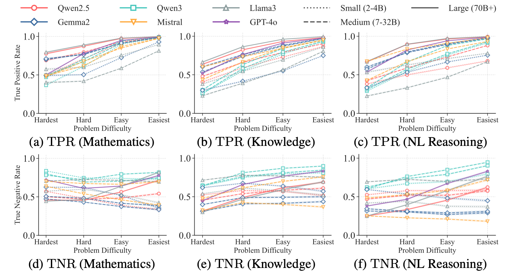
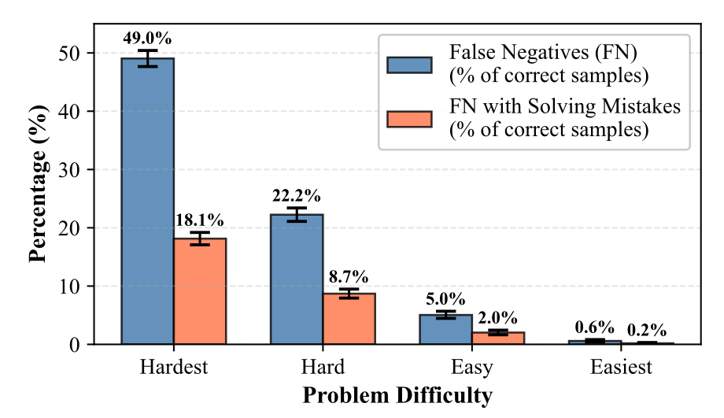
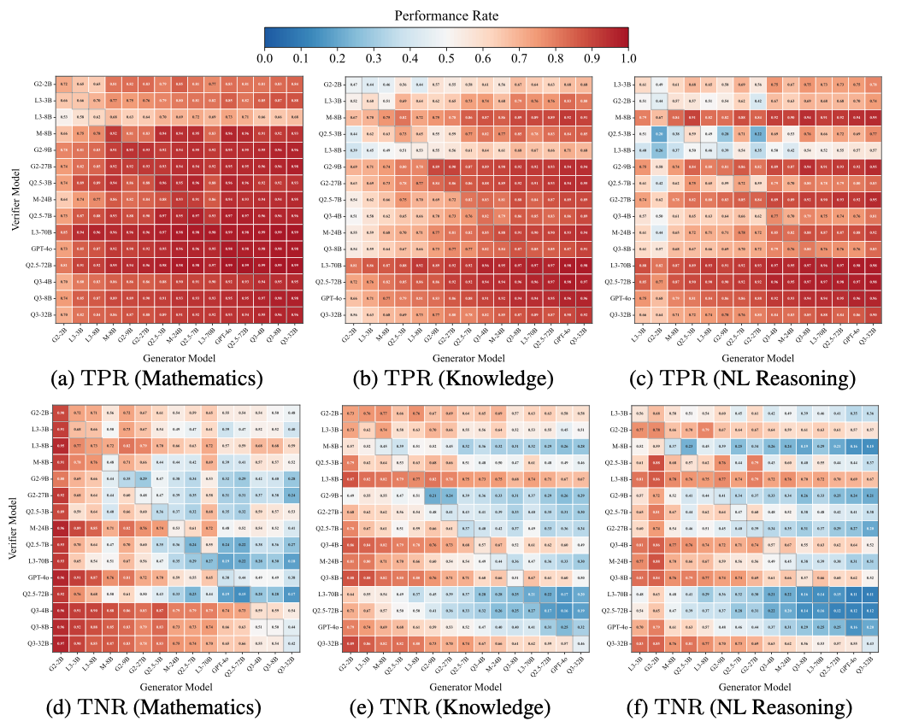
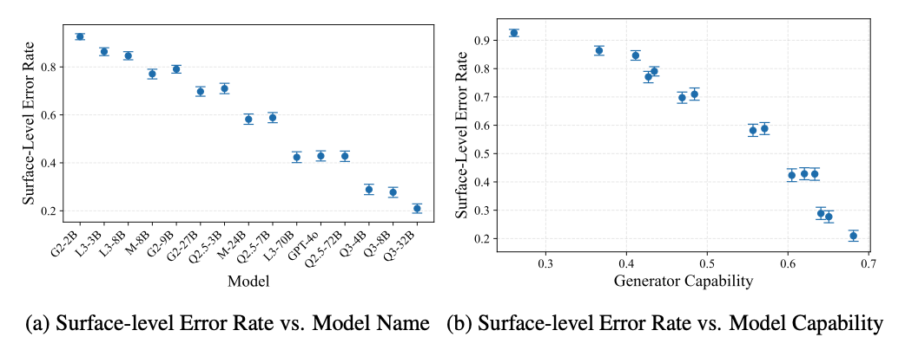
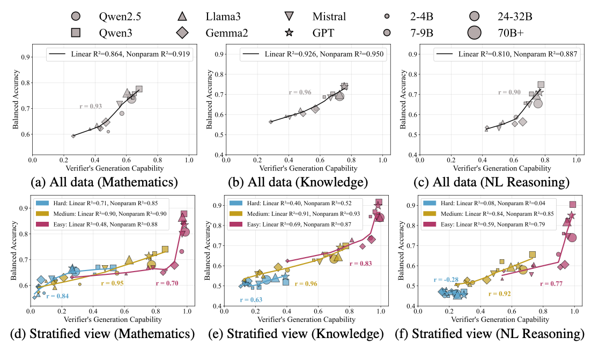
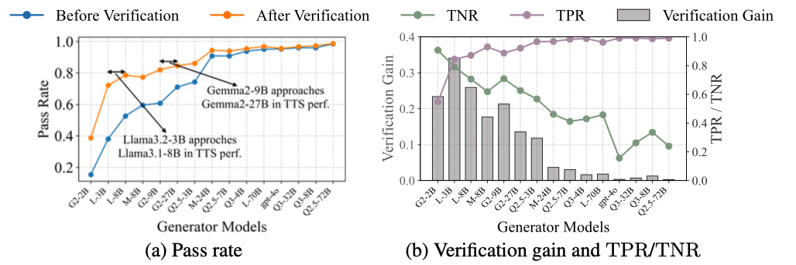
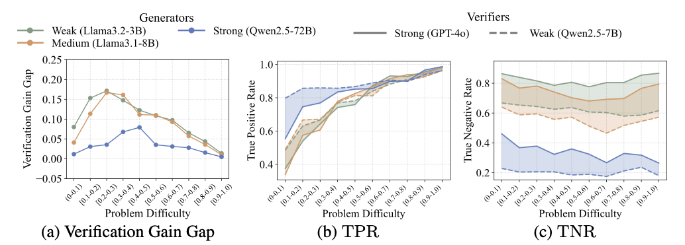

Variation in Verification: Understanding Verification Dynamics in Large Language Models
ICLR 2026
Abstract
Recent advances have shown that scaling test-time computation enables large language models (LLMs) to solve increasingly complex problems across diverse domains. One effective paradigm for test-time scaling (TTS) involves LLM generators producing multiple solution candidates, with LLM verifiers assessing the correctness of these candidates without reference answers. In this paper, we study generative verifiers, which perform verification by generating chain-of-thought (CoT) reasoning followed by a binary verdict. We systematically analyze verification dynamics across three dimensions - problem difficulty, generator capability, and verifier generation capability - with empirical studies on 12 benchmarks across mathematical reasoning, knowledge, and natural language reasoning tasks using 14 open-source models (2B to 72B parameter range) and GPT-4o. Our experiments reveal three key findings about verification effectiveness: (1) Easy problems allow verifiers to more reliably certify correct responses; (2) Weak generators produce errors that are easier to detect than strong generators; (3) Verification ability is generally correlated with the verifier's own problem-solving capability, but this relationship varies with problem difficulty. These findings reveal opportunities to optimize basic verification strategies in TTS applications. First, given the same verifier, some weak generators can nearly match stronger ones in post-verification TTS performance (e.g., the Gemma2-9B to Gemma2-27B performance gap shrinks by 75%). Second, we identify cases where strong verifiers offer limited advantage over weak ones, as both fail to provide meaningful verification gains, suggesting that verifier scaling alone cannot overcome fundamental verification challenges.
🔍 RQ1: How does problem difficulty affect verification?
Finding: Problem difficulty primarily affects TPR — verifiers more reliably certify correct responses on easier problems, while TNR shows no consistent trend with difficulty.

Figure 2. TPR (top row) rises consistently from hardest to easiest problems across all model families and domains. TNR (bottom row) shows no consistent trend with difficulty.

Figure 3. Why does TPR drop on hard problems? Verifiers often independently attempt the problem, arrive at a wrong answer, and then reject correct responses that disagree with their own solution. On the hardest quartile, 49% of correct responses are falsely rejected, with 18% of those false negatives directly caused by this failure mode.
🔍 RQ2: How does generator capability affect verification?
Finding: Generator capability primarily affects TNR — errors from weaker generators are easier to detect than those from stronger generators.

Figure 4. TPR (top) remains uniformly high regardless of generator strength. TNR (bottom) drops sharply as generators become more capable, shifting heatmaps from red to blue left-to-right across all three domains.

Figure 5. Why does TNR drop for stronger generators? Stronger generators make fewer surface-level errors (self-contradictions, arithmetic mistakes, incomplete responses). As these obvious signals disappear, incorrect solutions become harder to distinguish from correct ones.
🔍 RQ3: How does verifier capability affect verification?
Finding: Verifier capability correlates with verification performance, but the relationship is difficulty-dependent: approximately linear on medium problems, plateauing on hard problems, and showing a sharp threshold effect on easy problems.

Figure 6. (Top) Averaged over all problems, a strong linear correlation (r ≥ 0.90) exists between verifier generation capability and balanced accuracy. (Bottom) Stratified by difficulty: medium problems (yellow) maintain near-perfect linearity; hard problems (blue) plateau regardless of verifier capability; easy problems (pink) show a threshold effect where even modest capability gains yield large accuracy improvements.
⚡ Application to Test-Time Scaling (TTS)
Our findings reveal practical opportunities to optimize compute allocation in verifier-based TTS.
RQ4: Can a weak generator match a stronger one in TTS?
Yes. Under the same verifier, weak-to-medium generators can nearly close the performance gap with stronger generators, because their higher TNR produces larger verification gains.

Figure 7. (a) Pass rates before (blue) and after (orange) verification using GPT-4o as a fixed verifier. Gemma2-9B nearly matches Gemma2-27B post-verification, closing 75.7% of the original gap. (b) Verification gain peaks at weak-to-medium generators, where high TNR enables effective error filtering; gains diminish sharply as generator capability increases.
RQ5: Can a weak verifier match a strong verifier in TTS?
In certain regimes, yes — but these are also the regimes where verification gains are minimal overall. The gap between strong and weak verifiers narrows at difficulty extremes and with strong generators, yet both verifiers fail to provide meaningful gains in these cases.

Figure 8. (a) The verification gain gap between GPT-4o and Qwen2.5-7B narrows at both difficulty extremes and for strong generators. (b) On easy problems, both verifiers achieve comparable TPR. (c) With strong generators, TNR drops for all verifiers — scaling from a 7B verifier to GPT-4o cannot overcome this fundamental detection challenge.
BibTeX
@inproceedings{
zhou2026variation,
title={Variation in Verification: Understanding Verification Dynamics in Large Language Models},
author={Yefan Zhou and Austin Xu and Yilun Zhou and Janvijay Singh and Jiang Gui and Shafiq Joty},
booktitle={The Fourteenth International Conference on Learning Representations},
year={2026}
}